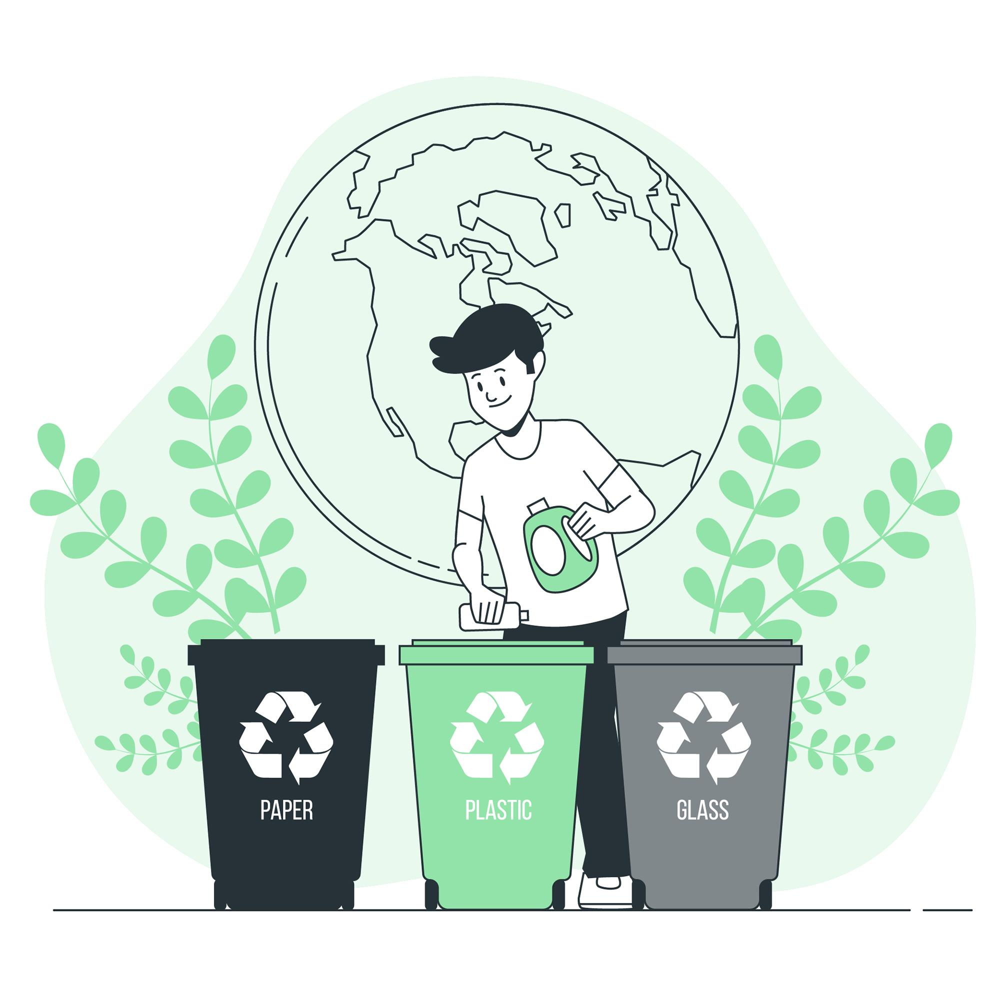

Conoce sobre esta ley de reciclaje
¿Que es el polietileno termoplástico?
El poliestireno es un polímero termoplástico ampliamente utilizado en una variedad de aplicaciones debido a sus propiedades únicas. Es un material versátil que se caracteriza por su ligereza, rigidez y capacidad de aislamiento térmico. El poliestireno es un tipo de plástico que se puede encontrar en varias formas y presentaciones, y es conocido por su apariencia brillante y su facilidad de procesamiento.
El poliestireno es un polímero termoplástico que se obtiene de la polimerización del estireno monómero.

Profesional

Personal Capacitado
Comprometete